甲戌日
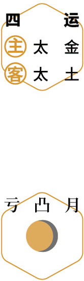
 润肺
润肺仲秋｜节气｜ 秋分 ｜时间｜ 九月廿三日至十月八日
今年秋分需特别注意的健康问题：便秘、痔疮
原料：银耳、黑桑椹干。
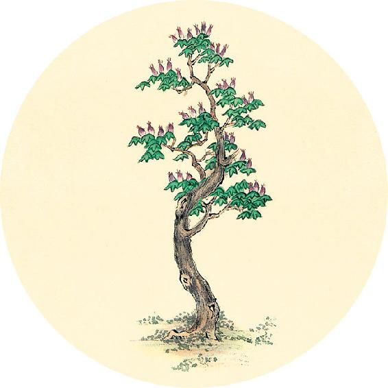
节气食方（一）
银耳羹（从秋分吃到立春）
吃银耳不想多吃糖的人，可以放甜味的果干（桑椹、樱桃、蔓越莓等）来调味。
银耳桑椹羹
原料：银耳1小朵、黑桑椹干1把。
做法：小火炖煮到银耳软糯，汤汁深黑。
功效：滋肾阴，补肝血，促进睡眠，预防白发。
这样煮出来的银耳无须放糖，自带天然的甜味。
身汗得后利，则实者活。
——黄帝内经·素问·玉机真藏论
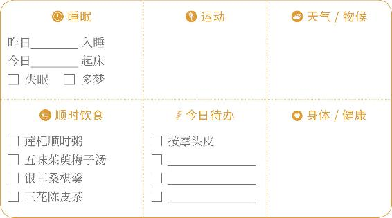

润肺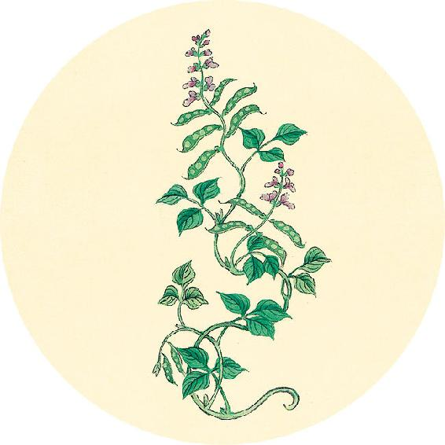
节气食方（二）
送子蟹汤
主料：小螃蟹250克、冬瓜250克、生地30克。
配料：生姜、黄酒、肥肉1小块。
做法：
1. 螃蟹的处理：换几次水吐净脏污，用醋水泡30分钟。
2. 用加醋的热水将螃蟹洗干净，去掉腮和内脏。
3. 将生地用清水泡1小时，下锅和肥肉一起熬30分钟。
4. 放入螃蟹、冬瓜、生姜、黄酒煮30分钟。
功效：滋阴清热，调肝肾。
【释义】用汗法和泻法，让身体发出汗，之后大便又畅通了，那么有五实证的人也能治好。
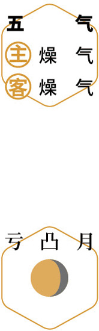
观潮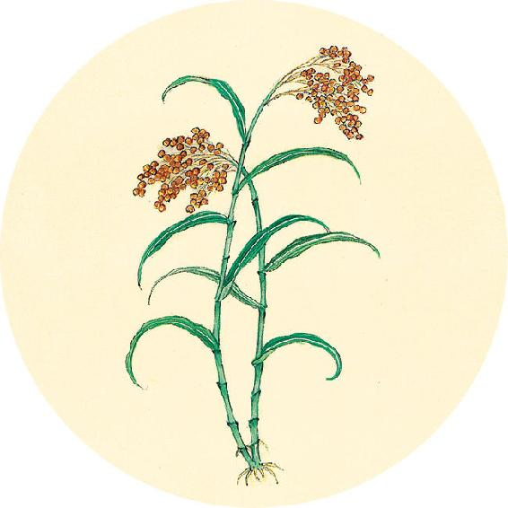
二十四节气茶养生
今年秋分节气品茶推荐：茉莉花茶。
三花陈皮茶
原料：玫瑰花6克、金银花6克、茉莉花3克、川陈皮6克、甘草3～6克。
做法：沸水冲泡饮用。
功效：健胃，理气，清新口气，调理急慢性肠炎，
预防“成人痘”（反复长痘者金银花和甘草可加倍）。
必先度其形之肥瘦，以调其气之虚实，实则泻之，虚则补之。必先去其血脉而后调之，无问其病，以平为期。
——黄帝内经·素问·三部九候论
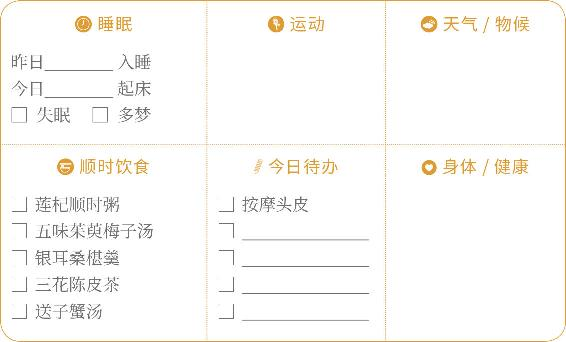
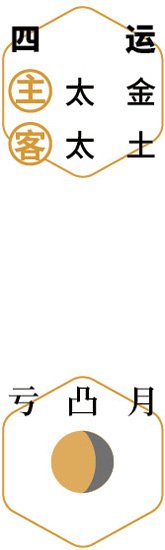
品花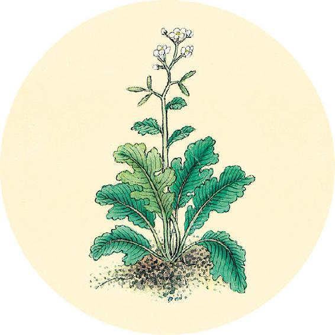
健康提示
秋分节气的养生功课：滋阴润燥。
从秋分到立春，是一年一度吃银耳的黄金时间。银耳功效明显又平和，是四季通用的补品，全家老幼可以一起吃。
今年秋分的养生特殊重点——
天气由湿热迅速转凉，预防换季病。
保养重点：肠道。
容易出现的问题：便秘、痔疮。
【释义】必先度量病人的身形肥瘦，了解它的正气虚实，实证用泻法，虚症用补法。但必先去除血脉中的凝滞，而后调补气血的不足，不论治疗什么病都是以达到气血平调为准则。
秋游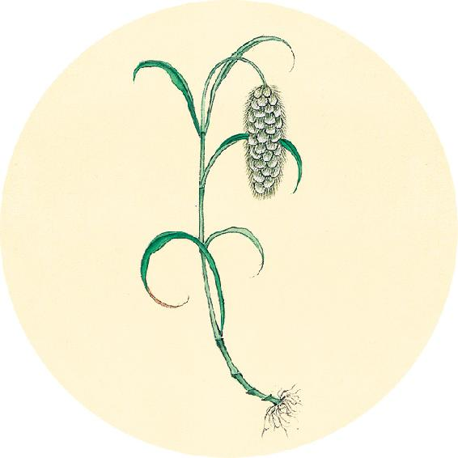
一候反思
平时如果长痘一般在什么部位？
□ 在脸颊和鼻子，伴有便秘
预防：喝清痘排毒茶（见8月24日）。
□ 每个月定期在下巴部位长
预防：喝姜枣茶加花椒（汉宫椒枣茶）。
□ 每个月定期在面部长
预防：喝三花陈皮茶。
□ 正在长痘
对策：加服新鲜鱼腥草榨汁，或银花甘草茶加倍（见7月8日），用马齿苋汁外擦。
故饮食饱甚，汗出（“汗出”疑为“必伤”，下同）于胃。
——黄帝内经·素问·经脉别论
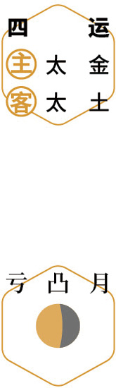
赏桂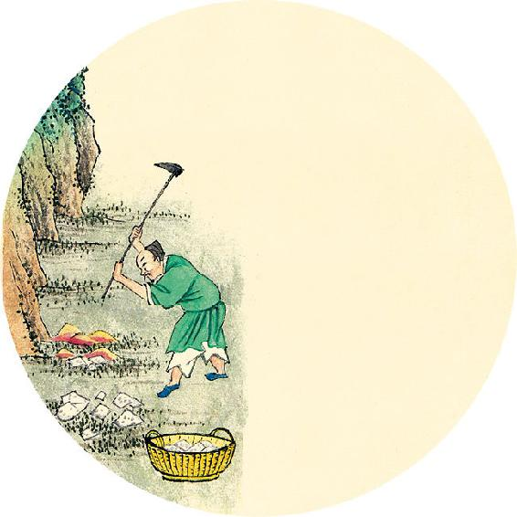
健康提示
今天是至圣先师孔子（名丘，字仲尼）2572周年诞辰日。古人说：“天不生仲尼，万古如长夜。”《论语》给后人的启迪，就像明灯照亮黑夜一般。在这部经典中，也包含着生活的智慧。
《论语》论“食”：
1. 强调主食的重要性。
“肉虽多，不使胜食气。”
（9月29日继续）
【释义】在饮食过饱的时候，必然伤坏胃腑。
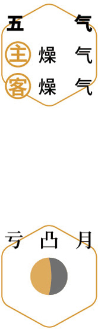
思贤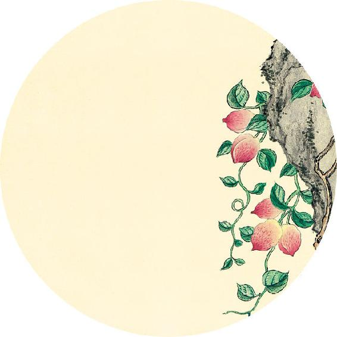
健康提示
《论语》论“食”
2. 重视吃姜。
“不撤姜食，不多食。”
3. 不吃不新鲜的食物。
“食而
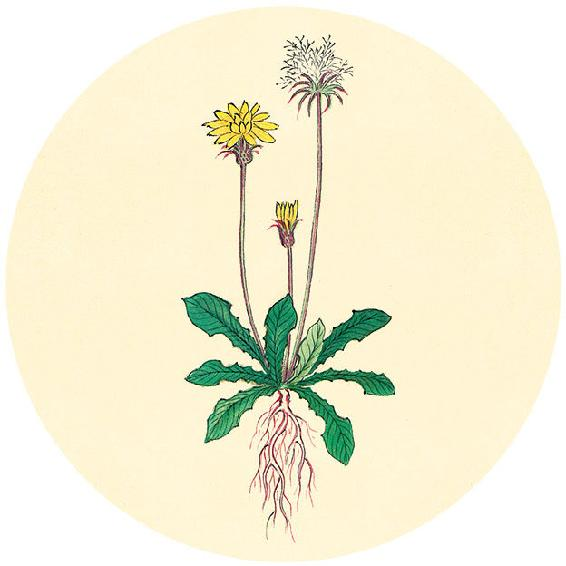
，鱼馁而肉败，不食。”“色恶，不食。”
“臭恶，不食。”
“祭肉不出三日。出三日，不食之矣。”
（9月30日继续）
惊而夺精，汗出于心。
——黄帝内经·素问·经脉别论
 试酒
试酒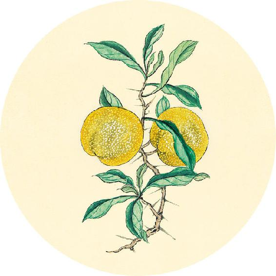
健康提示
《论语》论“食”
4. 不吃不应时的食物。
“不时，不食。”
5. 不吃处理不当的食物。
“失饪，不食。”
“割不正，不食。”
“不得其酱，不食。”
“沽酒市脯，不食。”
【释义】受惊而影响精神的时候，必然伤坏心脏。
 读书
读书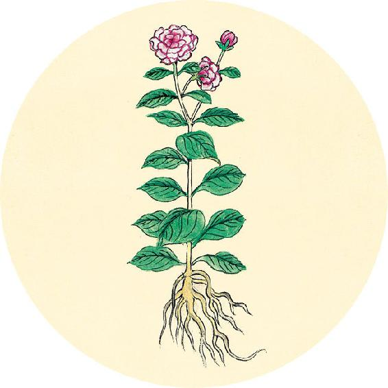
健康提示
从秋分开始，进入辛丑岁的五气（第五气）阶段，包含秋分、寒露、霜降、立冬四个节气，
历时60天（9月23日21:00—11月22日17:00）
主气——燥气；客气——燥气。
今年这两个月，天气偏凉，注意预防受风寒而产生呼吸道疾病，如发热、咳喘、鼻炎等，皮肤斑疹易发。同时要补养好身体，为即将到来的一个易生病的冬季做准备。
保健食方：五味茱萸梅子汤。
持重远行，汗出于肾。
——黄帝内经·素问·经脉别论
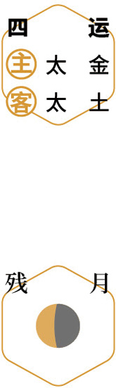
进补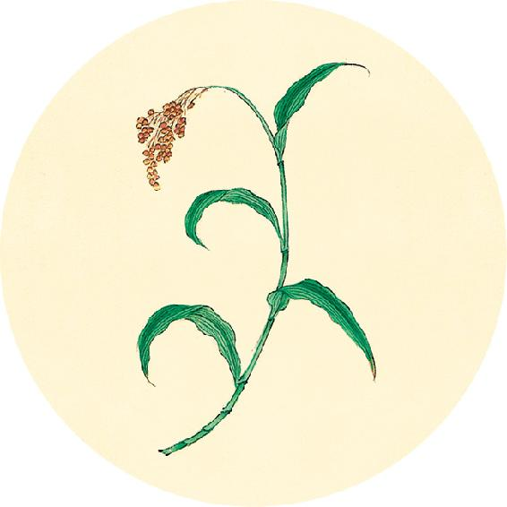
二候反思
你的身体是否有水液不平衡的现象？
口唇干燥，却不太想喝水 □ 是 □ 否
经常口渴，需频繁喝水，小便多 □ 是 □ 否
大腿粗肥，口干或咽干 □ 是 □ 否
大便不成形，眼干或皮肤干 □ 是 □ 否
以上有一个答“是”，说明身体内水液调节失衡，上燥下湿。
【释义】负重而远行的时候，则骨劳气越，必然伤坏肾脏。
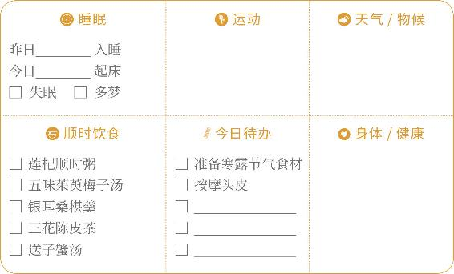
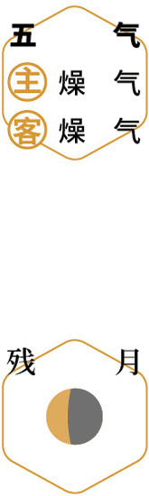
防病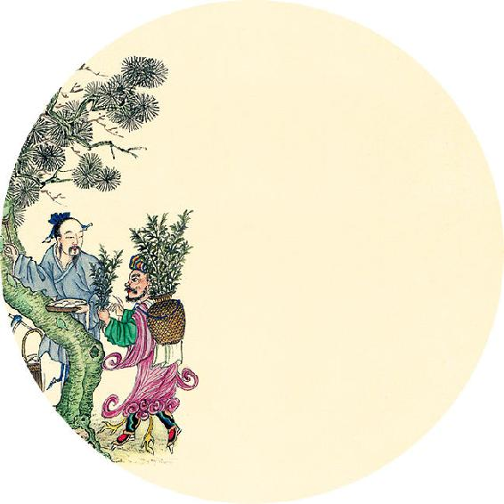
健康提示
辛丑岁五气（秋分到小雪前日）这两个月要抓紧时机养好肝血，并在今年深冬易病季节之前做好心肝肾的补养工作，可喝五味茱萸梅子汤。
功效：助睡眠，补五脏，滋肝养血，补肾固精，宁心益气，润肺生津，平补阴阳。
除了用于季节性进补，也适合肝血虚、肾虚、腰酸腿软、头晕耳鸣、遗精的人，和贫血、遗尿的儿童平时保健饮用。
做法见10月4日。
疾走恐惧，汗出于肝。
——黄帝内经·素问·经脉别论
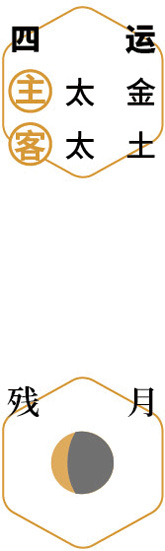
补水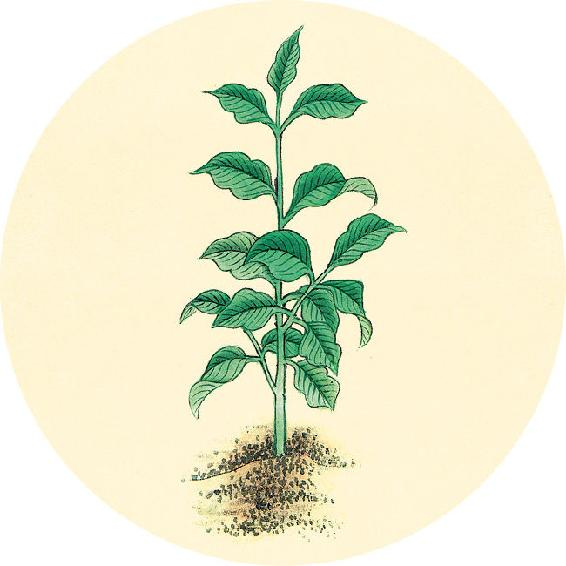
健康提示
辛丑岁五气保健方：五味茱萸梅子汤（秋分、寒露、霜降、立冬）
原料及在这道茶方中的功效：
1. 山茱萸12克，平补阴阳。
2. 五味子6克，补五脏之气。
3. 罗汉果1个，清肺化痰、三高保健、中和梅子酸味。
4. 桂花适量，化痰散瘀。
（10月5日继续）
【释义】疾走而恐惧的时候，由于疾走伤筋，恐惧伤魂，必然伤坏肝脏。
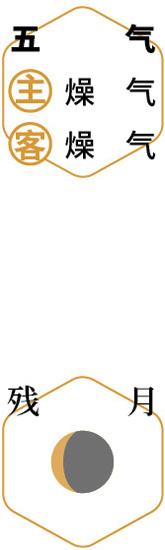
煮梅汤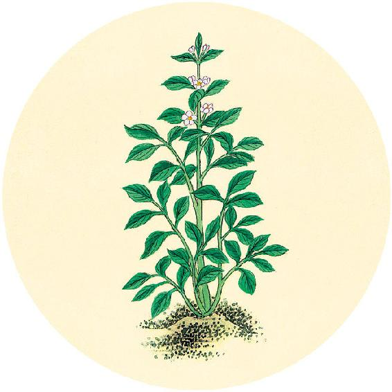
健康提示
五味茱萸梅子汤（下）
5. 甘草陈皮梅子汤1份[乌梅6个、大枣6个、山楂10克（孕妇不放）、甘草5克、川陈皮1/4～1/2 ]，健脾胃、调理气血、降血脂。
6. 气虚者加黄芪15～30克。
做法：将罗汉果压破，与除桂花外的其他原料一起加水下锅煮40分钟，滤出汤汁冲泡桂花，可加蜂蜜调味后饮用。可以煮3次。
注意：儿童积食、痰多时去掉山茱萸，多放桂花。女性经期暂时停饮。
关于山茱萸的功效见10月30日。
摇体劳苦，汗出于脾。
——黄帝内经·素问·经脉别论
备节礼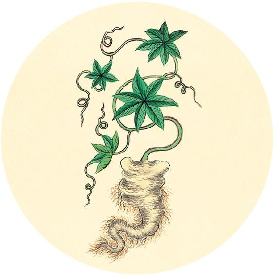
食材准备
后天进入寒露节气。
1. 银耳百合羹
原料：银耳、百合。
2. 桂子暖香茶
原料：桂花(干品）、枸杞。
3. 辛丑岁五气保健方：五味茱萸梅子汤（从秋分喝到立冬，做法见10月5日）
原料：山茱萸、五味子、罗汉果、桂花、甘草陈皮梅子汤。
4.辛丑岁全年保健方：莲杞顺时粥
原料：炒荷叶、川陈皮、莲子、枸杞子、茯苓、粥料。
【释义】由于脾主肌肉四肢，劳力过度的时候，必然伤害脾脏。
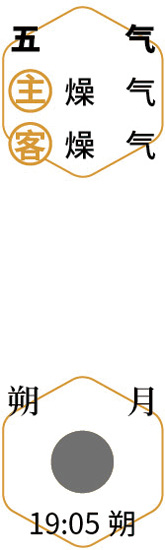
闲坐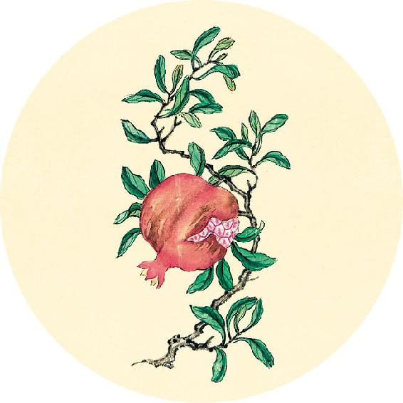
节气总结备
银耳桑椹羹________次
送子蟹汤________次
五味茱萸梅子汤________次
三花陈皮茶________次
莲杞顺时粥________次
身体哪些方面有改善_________________________
是否出现上燥下湿现象 □ 是 □ 否
女性经期是否出现时间不准现象 □ 是 □ 否
食气入胃，散精于肝，淫气于筋。
——黄帝内经·素问·经脉别论
静养